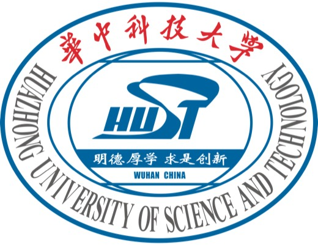

05EMNLP 2026
Qi Lu 盧琦
I am an artificial intelligence researcher interested in multimodal learning, AI agents, and AI ethics & safety. I am pursuing my undergraduate degree at HUST and previously worked as a Research Scientist at LightRead.
Unlike many of my peers, despite receiving strong offers for further graduate study, I have chosen not to pursue a master’s or doctoral degree during this pivotal era of AI. Instead, I intend to pursue independent research at the intersection of AI and finance.
01Researcher profile
Latest news
A paper on video deep research was accepted to EMNLP 2026.
Two papers on controllable video generation and image privacy protection were accepted to ACM MM 2026.
Recognized as an Outstanding Camper at the Shanghai Innovation Institute Summer Camp 2026.
A paper on diffusion image editing models was accepted to ICME 2026.
Received the National Scholarship, the highest honor for undergraduates in China.
A paper on segmentation models was accepted to IEEE TMM 2025.
Received the National Scholarship, the highest honor for undergraduates in China.
Publications
* Equal contribution§ Corresponding author† Project leader
04ACM Multimedia 2026
TempJail: Temporal Jailbreak Attacks against Image-to-Video Generation Models
PDF forthcoming Code
Collaboration & internship
Collaboration
↗Peking University
PKU · Beijing, China

Collaboration
↗
Huazhong University of Science and Technology
HUST · Wuhan, China
Collaboration
↗Nanjing University
NJU · Nanjing, China
Collaboration
↗University College London
UCL · London, United Kingdom
Internship
↗
LightRead
Research Scientist
Internship
↗University of Science and Technology of China
USTC · Hefei, China
Education
Bachelor of Engineering
Cybersecurity
High School Diploma
General studies